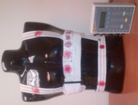

Hardware has to work for the person using it, in the setting where it will be used.
My work connects medical-device verification, wearable product development and prosthetic interfaces. These examples describe my role, the engineering work and its relevance to user-centered development.
Verification support for the JETi thrombectomy system
A medical-device program needs test evidence that connects its hardware, requirements and documentation. My Abbott work supported JETi development and EU MDR activities across capital equipment and disposable components.
Coordinated design documentation and verification and validation activities with engineering, manufacturing, quality and regulatory teams.
Developed aging protocols and coordinated test builds; supported pump-set and suction-tubing verification following aging, environmental conditioning and simulated transport.
Analyzed laboratory results with JMP and worked with external laboratories on electrical safety, EMC/immunity testing and supporting documentation.
Connection to human-centered development
Hands-on experience connecting a physical device to its requirements, test methods and documented evidence, while coordinating the people responsible for design and release.
02
HUMAN SYSTEMS INTEGRATION 2018–2020
Product concepts and R&D planning Program coordination
Wearable innovation
New wearable product concepts, AI opportunities and R&D planning
At Human Systems Integration, Inc., my work focused on generating new product ideas, shaping internal R&D concepts and developing technical proposals within a small multidisciplinary team. I proposed applications for AI-assisted sensing and next-generation wearable hardware, while also providing planning and coordination support to selected programs.
AI-generated concept illustration for GeminiWave. A generic view of garment-integrated sensing, removable electronics and a companion display. It does not depict an actual HSI, QinetiQ or military product, or show measured patient data.
My contribution within the team
Proposed new applications for AI-assisted physiological sensing and explored how emerging processing hardware could support future wearable products.
Developed early hardware and docking concepts, considering garment integration, interconnects, power and practical use.
Prepared research roadmaps and technical proposals with HSI leadership and specialist colleagues, connecting product opportunities to development tasks.
Supported PHYSIO Phase II program planning, task tracking and cross-disciplinary coordination alongside the principal investigator and engineering team.
Connection to human-centered development
My contribution was to connect potential applications and user needs with product ideas the team could investigate. Wearability, comfort, sensor integration and practical hardware interfaces helped frame those concepts and research plans.
These examples describe my concept, proposal and coordination work within HSI’s team. The AI ideas are presented as research directions.
Later public research involving HSI wearables
The 2024 AFRL Biotech Days Summit program describes SoarTech’s SAVIOR research integrating an HSI Physio Shirt with AI/ML-assisted remote health monitoring. This is separate work published after my HSI tenure, included as external research context.
Related HSI wearable-network technology and fundingPublished HSI technology: figures 5A–5B, U.S. Patent 12,422,887 B2, assigned to Human Systems Integration, Inc. The 2025 patent is shown as company technology context; Faheem is not listed as an inventor. View the patent and named inventors ↗
The published patent identifies government support under W91CRB-18-C-0035 (U.S. Army PEO Soldier) and FA8750-18-C-0175 (Air Force Research Laboratory). These references concern the tactical personal-area-network technology shown in the patent; they are separate from the PHYSIO award above.
03
FOSTER-MILLER / QINETIQ 2012–2013
Wearable product development and engineering coordination
More physiological inputs. More context about movement. More room for future sensing applications. My QinetiQ work helped connect garment development, hardware interfaces and prototype production for the second-generation Remote Physiological Status Monitoring program.
THE SECOND-GENERATION DESIGN
Expanding what a wearable could measure.
The development program moved beyond the earlier two-lead, single-band configuration toward a broader physiological-sensing platform.
Garment and removable electronics Original photograph from my program-history presentation. The black garment is identified with generation 1 in the comparison slide.
02The expanded prototype

More sensing points across the torso The generation-2 laboratory prototype from the original comparison slide, shown on a mannequin. Archive image at its original resolution.
Design and prototype comparison from my career presentation, slides 91–92. Photographs show historical development hardware. Feature maturity is detailed below.
HARDWARE CHANGES, WITH A PURPOSE
What improved from RPSM1 to RPSM2
Each change addressed a product question: what could we sense, how would it fit, and how could the platform evolve? The benefits below describe the engineering intent of the documented changes.
Selected changes and the development status recorded in the comparison slide
Capability
RPSM1 baseline
RPSM2 development
Why it matters
ECG sensing
2-lead system
Up to 12 leadsPrototype
More options for electrode placement and physiological research.
Respiration
Single band
Dual bandsPrototype
Separate sensing at the chest and abdomen.
Movement context
Accelerometer
Accelerometer, gyroscope and magnetometerBoard / assembly in progress
Provide movement and orientation context alongside physiological signals.
Battery approach
Replaceable battery
Rechargeable batteryPrototype
Support reuse through charging between sessions.
Sensor expansion
No bus architecture listed
Serial, I²C and SPI interfacesPrototype testing
Provide connections for additional sensing hardware.
Algorithm updates
Not listed
USB and JTAG interfacesPCB assembly
Support firmware development and future algorithm integration.
Mobile compatibility
Not listed
Android compatibilityDemonstration
Establish a mobile interface path for the wearable platform.
Wireless architecture
Bluetooth
Bluetooth 4 designPCB stage
Update the radio architecture for the next system iteration.
The comparison records work at several development stages. “Up to 12 leads” is the slide’s prototype description; contemporaneous research correspondence discusses an 8–10-lead configuration. Lead count does not establish diagnostic accuracy. Battery runtime and fatigue-assessment performance were not established in these records.
01 / ON THE BODY
Fit was part of the engineering.
Multiple garment sizes and textile-integrated electronics appeared in the prototype plan. Closure concepts explored D-rings, snaps and wraparound garments, with ventilation options considered alongside the sensing layout.
02 / AT THE INTERFACE
The garment and electronics had to work together.
Attachment, access to the module and putting the garment on or taking it off were design decisions. I coordinated reviews and worked with garment-manufacturing partners on interfaces and prototype production.
My contribution to the team
Coordinated garment and electronics development, including design reviews of fit, closures and removable-module interfaces.
Worked with garment-manufacturing partners on attachment options, prototype builds and production coordination.
Explored fatigue-assessment research combining ECG, respiration and movement sensing with specialist collaborators.
BRINGING THIS EXPERIENCE TO YOUR PRODUCT
Building a wearable that needs to move beyond the bench?
Let’s work through sensor integration, garment interfaces, prototype planning and the next development decision.
Sources, development scope and military research lineage
The hardware comparison comes from my career presentation, slide 92, “Comparison: RPSM 1 to RPSM2.” Its numbered image markers identify the black garment as generation 1 and the mannequin-mounted prototype as generation 2. The earlier-generation photograph above is the higher-resolution view from slide 91. Original photo bytes are preserved; the second image is rotated only for display. Neither image shows a human participant or a physiological recording.
Contemporary 2013 project correspondence supports my garment-interface, manufacturing coordination and exploratory fatigue-research role. The comparison identifies ECG and respiration prototypes, electronics work in progress and an Android compatibility demonstration. Personnel alerts, broader application development and cognitive-fatigue functionality were listed as not started. No clinical validation or field-performance outcome is attributed to RPSM2 here.
The earlier Foster-Miller physiological-monitoring garment patent family documents U.S. Army support under W81XWH-04-1-0146. This is an earlier technology-lineage reference, separate from an RPSM2-specific award or a personal grant. Read the public patent and government-support statement ↗
Red Bull, Equivital, Foster-Miller and QinetiQ are referenced for historical context. This portfolio does not imply their endorsement of GeminiWave.
04
FOSTER-MILLER / QINETIQ 2007–2014
Program Manager and Principal Investigator
Prosthetic interfaces
Connecting the residual limb, sensing and prosthetic control
Lower-limb prosthetics require close attention to the interface between the person and the device. My research work brought together sensing, socket and liner interfaces, signal processing and knee-control hardware.
Q-EMG sensor. Original photograph from the 2014 EMG Signal Analysis and Prosthetic Control System presentation, slide 25. Sensor development with Michael Engineering.Q-DAQ with the DACGEN module. Original hardware photograph from the same project presentation, slide 24. No participant or recorded patient signal is shown.
My contribution
Led multidisciplinary advanced lower-limb prosthesis research with electrical, mechanical, software, controls and biomedical specialists.
Directed work on electrodes integrated into liners and sockets, EMG mapping to identify recording sites and a 32-channel portable data-acquisition system.
Supported analysis of data from able-bodied and amputee participants and contributed to research on socket fit and performance for transfemoral amputees.
Connection to human-centered development
Direct experience with human-device interfaces and physiological data, where anatomy, fit and signal quality affect engineering decisions.
Selected coauthored research: Improved Socket Performance and Fit for Transfemoral Amputees (2014); residual-limb EMG and electrode-site identification work presented at AAOP (2011).
05
PROSTHETIC REHABILITATION
Collaborative research work
Virtual reality
Virtual-reality approaches to phantom-limb pain
I collaborated on virtual-reality work addressing phantom-limb pain for people with above-knee amputation. The work explored visual perception and feedback in the context of prosthetic patient therapy.
My contribution
Worked with collaborators on approaches using externally mounted cameras and a head-mounted display to connect simulated visual perception with the user’s experience. This complemented my broader work on prosthetic interfaces and rehabilitation technology.
Connection to human-centered development
Experience considering perception and the interaction between a person, a display and a physical device in a rehabilitation setting.
Exploratory rehabilitation work; no clinical efficacy or quantified pain-reduction outcome is claimed.
06
INDEPENDENT PROJECT 2024
Python data analysis
Technical prototype
A wearable ECG data-analysis prototype
A small, inspectable project demonstrates the path from incoming sensor data to an analysis that an engineer can review.
# Convert signal to numeric
data['ecg_signal'] = pd.to_numeric(data['ecg_signal'], errors='coerce')
data = data.dropna()
# Train Unsupervised Model
model = IsolationForest(contamination=0.1, random_state=42)
model.fit(data)
Unmodified excerpt from my public anomaly_detection.py source file ↗. This shows the implementation, without displaying physiological recordings or implying clinical validation.
What I implemented
Python serial-data collection and CSV storage for ECG readings.
Numeric conversion and data cleaning, followed by Isolation Forest outlier detection.
Signal plots with flagged observations using pandas, scikit-learn and Matplotlib.
Connection to human-centered development
A practical example of handling physiological data and presenting results for review. It complements my hardware and research-program experience.
An independent technical demonstration, not a clinically validated diagnostic system. Flagged outliers are not diagnoses.
ADDITIONAL DEFENSE R&D EXPERIENCE
DARPA program context
My earlier Foster-Miller / QinetiQ RF-structures work included support for the Integrated Sensor is Structure (ISIS) program through Northrop Grumman. DARPA describes ISIS as a joint DARPA / Air Force effort integrating radar and airship structures. This was a separate engineering program from the medical-device, prosthetic and VR work described above.
ENGINEERING WITH THE USER IN VIEW
Discuss your device, your users and your next milestone.
For medical-device R&D, wearable development, prosthetic technology or a focused engineering review.
These summaries describe Faheem Faheem’s prior employment, contract and research roles, plus independent project work. Company and product names identify that experience and do not imply endorsement or current affiliation.